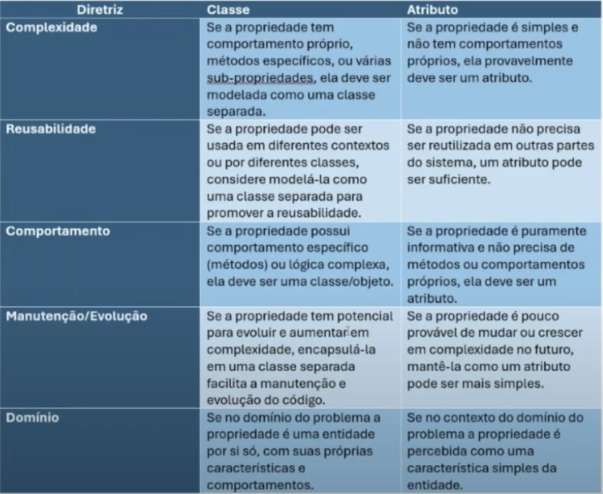

Disciplinas
ANÁLISE E PROJETO DE SOFTWARE ORIENTADO A OBJETOS. Concluído
Materiais
[UFMS Digital] Análise e Projeto de Software Orientado a Objetos - Módulo 4 - Unidade 1 sendProf° ministrante: Luciano Édipo Pereira da Silva.
Conteúdo
Ferramentas CASE (Computer-Aided Software Engineering);
- Proposta:
- Levantamento;
- Modelagem;
- Desenho;
- Implementação;
Ferramentas CASE.
- Ferramentas que auxiliam na criação e gerenciamento de diagramas UML, geram código automaticamente e facilitam a documentação.
- Visual Paradigm: Ferramenta completa para UML e modelagem de software.
- Enterprise Architect: Amplamente usada em grandes projetos devido à sua robustez.
- Astah: Simples e intuitiva, boa para iniciantes.
- StarUML: Uma alternativa de código aberto.
Levantamento e Análise de Requisitos.
- Identificação de Requisitos: Técnicas como entrevistas, questionários e workshops.
- Documentação de Requisitos: Uso de casos de uso e especificações textuais.
Modelagem do Sistema.
- Criação do Diagrama de Casos de Uso: Identificar os principais atores e suas interações com o sistema.
- Detalhamento com Diagramas de Classes e Diagramas de Comunicação:
- Diagrama de Classes: Definição de classes, atributos, métodos e relacionamentos.
- Diagrama de Comunicação: Mostrar as interações entre os objetos no sistema.
Design (desenho) e Arquitetura.
- Definição da Arquitetura do Sistema: Escolher um padrão arquitetural (por exemplo, MVC - Model-View-Controller).
- Aplicação dos Padrões de Projeto GRASP: Explicar alguns padrões, como "Especialista na Informação" e "Controller", e como eles ajudam na atribuição de responsabilidades.
Implementação, Teste e Validação.
- Transição do Modelo para o Código: Uso das ferramentas CASE para gerar esboços de código.
- Boas Práticas na Codificação: Importância dos princípios SOLID para manter o código limpo e sustentável.
- Desenvolvimento de Testes Unitários e de Integração: Garantir que cada componente do sistema funcione corretamente.
- Ferramentas de Teste: Breve introdução a ferramentas como JUnit para Java.
Localizador de Transporte Municipal
Base para Análise TextualO sistema "Localizador de Transporte Municipal" deve ser projetado para gerenciar e fornecer informações em tempo real sobre múltiplas linhas circulares de ônibus operando em uma cidade. Este sistema deve permitir que passageiros acessem informações sobre diferentes linhas circulares de ônibus, como localização atual dos veículos, intervalo entre voltas, e estimativas de tempo para chegada nos pontos de parada ao longo de cada linha.
O sistema deve fornecer mapas interativos mostrando o trajeto completo de cada linha e a localização em tempo real dos ônibus, bem como as linhas ativas. Além disso, oferece estimativas da próxima passagem nos pontos de parada, permitindo que os cidadãos planejem suas viagens com eficiência.
Funcionalidades adicionais incluem notificar os usuários sobre atrasos ou alterações no serviço e exibir a lotação atual de cada ônibus, bem como a lotação total de cada linha.
Atividade 1-Identificação das Classes de Análise- Atividade 1.1-Extração de Classes Candidatas
- sistema
- Localizador de Transporte Municipal
- informações
- linhas circulares
- ônibus
- cidade
- passageiros
- localização
- veículos
- intervalo
- voltas
- estimativas de tempo
- pontos de parada
- mapas interativos
- trajeto
- cidadãos
- viagens
- funcionalidades
- usuários
- atrasos
- alterações
- serviço
- lotação atual
- lotação total
- Atividade 1.2: Eliminação de Classes Inapropriadas
- sistema
- Localizador de Transporte Municipal (visão genérica do escopo)
- informações (visão genérica de dados)
- linhas circulares
- ônibus
- cidade (visão genérica de escopo)
- passageiros (sinônimo de usuários)
- localização (atributo de ônibus)
- veículos (sinônimo de ônibus)
- intervalo (atributo de linha)
- voltas (representação de um estado)
- estimativas de tempo (informação de parada)
- pontos de parada
- mapas interativos (visão genérica de escopo)
- trajeto
- trajeto
- cidadãos (sinônimo de usuários)
- viagens (visão genérica de escopo)
- funcionalidades (visão genérica de escopo)
- usuários
- atrasos (representação de um status)
- alterações (representação de um status)
- serviço (visão genérica de escopo)
- lotação atual (atributo de ônibus)
- lotação total (representação de um status)
- sistema
- linhas circulares + linha
- ônibus
- localização (atributo)
- intervalo (atributo)
- estimativas de tempo (atributo)
- pontos de ônibus ponto de parada
- trajeto
- usuários usuário
- lotação atual (atributo)
- lotação total (atributo)
Ou seja
- Atividade 2.1: Identificação de Associações
- Diretrizes: Existência independente,
- linha - trajeto
- linha - ônibus
- trajeto-ponto de parada
- usuário - ônibus
- Atividade 2.2: Identificação de Agregações
- Agregação: O "todo" pode existir sem suas partes, mas as partes têm uma existência mais significativa.
- trajeto contém ônibus
- trajeto contém pontos de parada
- Atividade 2.3: Identificação de Heranças
- Análise de Domínio: Tipos de Linhas.
- Inserir as identificadas nas etapas anteriores
- Análise de Domínio
- Nome → Usuário
- Capacidade → Ônibus
- Parada Inicial→ Trajeto
- ... → ...
- Refinar seguindo as diretrizes:
